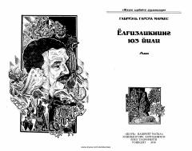

YYBuendia oilasining bir necha avlod davom etgan hayoti va Makondo qishlog'i haqidagi afsonaviy roman.
Bu asar Buendia oilasining bir necha avlod davomidagi hayoti, Makondo qishlog'ining tashkil topishi va tanazzulga uchrashi haqida hikoya qiladi. Sehrli realizm janrining eng yorqin namunasi bo'lgan ushbu romanda insoniyatning yolg'izlik va taqdir oldidagi ojizligi falsafiy tarzda ochib berilgan.